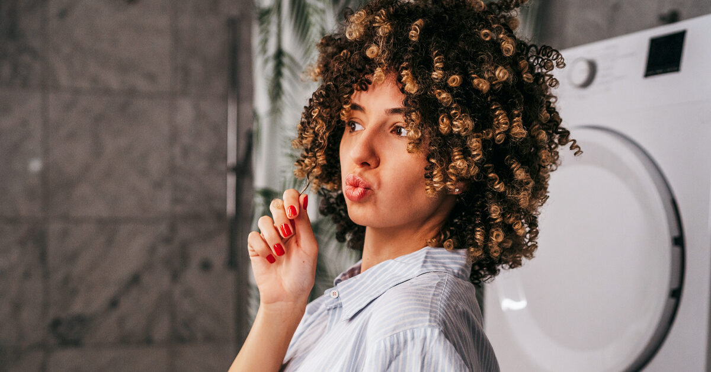

<!-- <app-navbar></app-navbar> -->

<div class=" container">

    <div class="bigbox">    
       <div class="text-center">
        
       </div>
       <br>
  <h2 class="m-1 p-2">اعرفي مسامية شعرك</h2>
  <br>
 <div class="mb-5 p-2 m-1">
  <p style="font-weight: lighter; font-weight: bold ; margin-bottom: 20px;">تشتهر منتجاتنا بخلطات الزيوت الطبيعية بنسبة 100٪ ومدى تخصصها لكل انواع الشعر.</p>
  <p >دي قائمة هتساعدك على معرفة نوع شعرك لو كان عالي المسامية أو منخفض المسامية لأن كل نوع شعر له المنتجات الخاصة به، كل منتجاتنا طبيعية 100% مخصصة لنوع شعرك.</p>
  <p>ملحوظة:</p>
  <p>لو شعرك ذو مسامية عالية دي المنتجات اللي هتساعدك في الحصول على شعر صحي </p>
  <p>ماسك الزيوت للشعر ذو المسامية العالية </p>
  <p>سيروم الشعر الجاف </p>
  <p>لو شعرك ذو مسامية منخفضة دي المنتجات اللي هتساعدك في الحصول على شعر صحي </p>
  <p>سيروم الشعر الدهني </p>
  <p>ماسك الزيوت للشعر ذو المسامية المنخفضة </p>
  <p>-الشعر ذو المسامية العالية</p>
  <p>الشعر جاف دايما وهايش</p>
  <p>الشعر معرض أكثر للتكسر والتقصف</p>
  <p>يمتص الرطوبة بسرعة وصعب أن يفقدها، وكمان سريع الجفاف ومش بيحتاج إلى مجفف للشعر.</p>
  <p>الشعر عالي المسامية بيتشابك بسهولة ويصعب تصفيفة.</p>
  <br>
  <p>دائما ما بتتكون العقد جواة ويصعب حلها بسهولة.

    يحتاج زيوت ثقيلة.
    
    
    
    -الشعر الطبيعي
    
    يمتص الرطوبة بكمية معقولة ويفقدها بكمية معقولة 
    
    مظهر الشعر صحي، لامع وكثيف
    
    
    
    -الشعر ذو المسامية المنخفضة
    
    الشعر منخفض المسامية يحتاج وقتا تحسي إنه مشبع بالماء عند غسله
    
    لا يتشابك الشعر منخفض المسامية بسهولة ولكنه يميل أكثر إلى الهيشان واللون الباهت بسبب صعوبة ترطيبة للشعر الكيرلي واللمعان مع الشعر الأملس.
    
    يبدو مظهره صحي لكنه في الحقيقة يعاني من الهيشان ولا يتمتع بالكثافة 
    
    يأخذ وقت أكثر ليجف</p>

  
 </div>
    </div>
</div>
